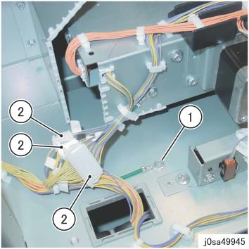
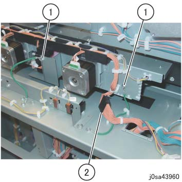
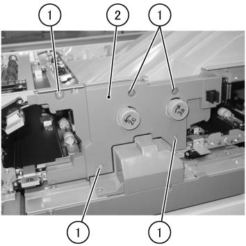
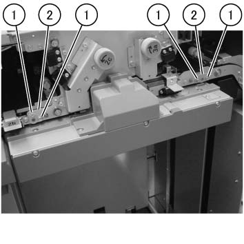
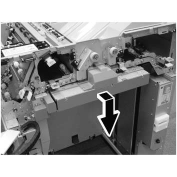
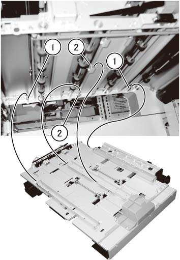
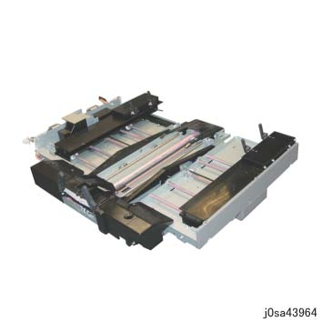
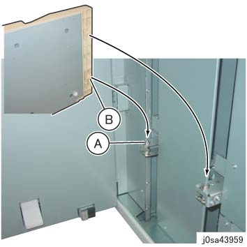

REP 39.28.1 防篡改 单元 
参考 PL:PL 39.28
Removal

在...之后 turning 关闭/脱离 电源开关, 确认 the screen 显示 进入 关闭/脱离 和 the [电源 Saver] button 停止 blinking. 然后, 关闭 the 主 电源 开关, 确认 the [主 电源] 灯 具有 turned 关闭/脱离, 和 然后 关闭 the Breaker 和 unplug 电源插头.
拆卸 HCS 从 上游 设备. (REP 39.1.1)
拆卸后盖板. (REP 39.2.2)
拆卸 上方 盖板. (REP 39.4.1)
拆卸 Dolly 和 堆叠器 纸盘.
If unable to 拆卸 堆叠器 纸盘, 旋转 the disk 的 Elevator 电机 in CCW 方向 to 下方 堆叠器 纸盘 by 大约. 20 cm. (图 1)
(A) Elevator 电机

(图 1) sa43958
拆卸 堆叠器 纸盘.
断开连接器 at the 防篡改 单元 读取 侧面. (图 2)
拆卸螺钉 的 接地线.
断开连接器（x3）.

(图 2) sa49945
断开连接器 at the 防篡改 单元 读取 侧面. (图 3)
拆卸螺钉（x2） 的 接地线.
断开连接器.

(图 3) sa43960
拆卸 传输 中央 Inner 盖板. (图 4)
拆卸螺钉（x5）.
拆卸 传输 中央 Inner 盖板.

(图 4) saw439011
拆卸销 支架 at ...的前面 防篡改 单元. (图 5)
拆卸螺钉 (M4: x4).
拆卸销 支架 (x2).

(图 5) saw439012
The removal 方向 用于 the 防篡改 单元. (图 6)

(图 6) saw439013
拆卸 防篡改 单元 by holding 到...上 the metallic 零件/部分 at ...的底部 防篡改 单元. (图 7)
拉动 防篡改 单元 slightly towards you to 拆卸 防篡改 单元 从 the 销 (x2) 在后面.
拆卸 防篡改 单元 从 Hook (x6) in the central 支架.

(图 7) saw439025
转动 removed 防篡改 单元 upside 下. (图 8)

(图 8) sa43964
安装
安装时 the 防篡改 单元, 安装 it 到 Hook (x6) 的 central 支架, 和 然后 安装 it 到 销 (x2) 在后面. (图 7)
安装时 堆叠器 纸盘, 对齐 hole of 堆叠器 纸盘 到 销 的 Arm 纸盘. (图 9)
(A) 销
(B) Hole

(图 9) sa43959